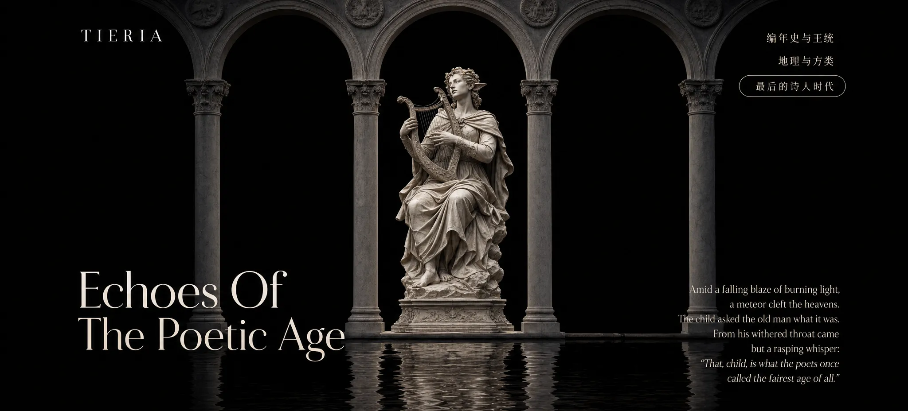

太古时代
- 翠月的眼睛
- 忒诺亚-黄金时代与白银时代
- 荒州-诸神之子的崛起
- 巴洛卢瑟-尚葛之乱
- 拉尔斯尼亚-英雄时代的回声
- 翠月往事
- 翡翠的陨落
- 太古时代的终章
Amid a falling blaze of burning light, a meteor cleft the heavens.
The memory of kings, unfinished deeds, and the order of the known world.
诸王归来，古史逝去，英雄与时代仍在回响。
The shape of lands, forgotten frontiers, and the order of rivers, realms, and roads.

This page is reserved for the next chapter. The gateway works now, and the return path is ready.